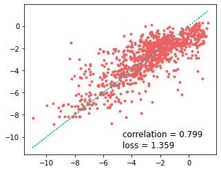

import pandas as pd
import matplotlib.pyplot as plt
# import seaborn as sns
import matplotlib as mpl
import rdkit, rdkit.Chem, rdkit.Chem.Draw
from rdkit.Chem.Draw import IPythonConsole
import numpy as np
import mordred, mordred.descriptors
from mordred import HydrogenBond, Polarizability
from mordred import SLogP, AcidBase, BertzCT, Aromatic, BondCount, AtomCount
from mordred import Calculator
import exmol as exmol
from rdkit.Chem.Draw import rdDepictor
import os
from sklearn.ensemble import RandomForestRegressor
from sklearn.model_selection import train_test_split
from sklearn.metrics import roc_auc_score, plot_roc_curve
os.environ["CUDA_VISIBLE_DEVICES"] = "0"
rdDepictor.SetPreferCoordGen(True)
IPythonConsole.ipython_useSVG = True
# sns.set_context('notebook')
# sns.set_style('dark', {'xtick.bottom':True, 'ytick.left':True, 'xtick.color': '#666666', 'ytick.color': '#666666',
# 'axes.edgecolor': '#666666', 'axes.linewidth': 0.8 , 'figure.dpi': 300})
color_cycle = ["#F06060", "#1BBC9B", "#F3B562", "#6e5687", "#5C4B51"]
mpl.rcParams["axes.prop_cycle"] = mpl.cycler(color=color_cycle)
np.random.seed(0)
soldata = pd.read_csv(
"https://github.com/whitead/dmol-book/raw/master/data/curated-solubility-dataset.csv"
)
features_start_at = list(soldata.columns).index("MolWt")
Build and train a Random Forest model
# make object that can compute descriptors
calc = Calculator()
calc.register([HydrogenBond.HBondDonor, HydrogenBond.HBondAcceptor])
calc.register(
[AcidBase.AcidicGroupCount, AcidBase.BasicGroupCount, Aromatic.AromaticBondsCount]
)
calc.register([SLogP.SLogP, Polarizability.APol])
calc.register(
[
BondCount.BondCount(type="double"),
BondCount.BondCount(type="aromatic"),
AtomCount.AtomCount("Hetero"),
]
)
# make subsample from pandas df
molecules = [rdkit.Chem.MolFromSmiles(smi) for smi in soldata.SMILES]
raw_features = []
for e, c in zip(molecules, calc.map(molecules, quiet=True)):
raw_features.append([v for v in c.values()])
feature_names = np.array([d.description() for d in calc.descriptors])
raw_features = np.array(raw_features)
# feature_names = soldata.columns[features_start_at:]
# raw_features = soldata[feature_names]
labels = soldata["Solubility"]
def pick_features(raw_features):
fm = raw_features.mean()
fs = raw_features.std()
def feature_convert(f):
f -= fm
f /= fs
return f
features = feature_convert(raw_features)
# we have some nans in features, likely because std was 0
features = features.astype(float)
features_select = np.random.randint(
0, len(raw_features[0]), size=3
) # np.all(np.isfinite(features), axis=0)
features = features[:, features_select]
names = feature_names[features_select]
return features, names
features, names = pick_features(raw_features)
print(features.shape, names)
X_train, X_test, y_train, y_test = train_test_split(
features, labels, test_size=0.1, shuffle=True
)
clf = RandomForestRegressor(max_depth=10, random_state=0)
clf.fit(X_train, y_train)
predicted = clf.predict(X_test)
(9982, 3) ['Wildman-Crippen LogP' 'number of hydrogen bond donor'
'basic group count']
plt.figure(figsize=(5, 4))
plt.plot(y_test, predicted, ".")
plt.plot(y_test, y_test, linestyle=":")
plt.text(
max(y_test) - 6,
min(y_test) + 1,
f"correlation = {np.corrcoef(y_test, predicted)[0,1]:.3f}",
fontsize=12,
)
plt.text(
max(y_test) - 6,
min(y_test),
f"loss = {np.sqrt(np.mean((y_test - predicted)**2)):.3f}",
fontsize=12,
)
plt.savefig("RF-ROC.png")

Compute descriptor attributions
def model_eval(smiles):
molecules = [rdkit.Chem.MolFromSmiles(smi) for smi in smiles]
labels = clf.predict(np.nan_to_num(features))
return labels
labels = model_eval(soldata.SMILES)
smi = soldata.SMILES[1500]
stoned_kwargs = {
"num_samples": 2000,
"alphabet": exmol.get_basic_alphabet(),
"max_mutations": 2,
}
space = exmol.sample_space(smi, model_eval, stoned_kwargs=stoned_kwargs)
0%| | 0/2000 [00:00<?, ?it/s]
🥌STONED🥌 Mutations: 1: 0%| | 0/2000 [00:00<?, ?it/s]
🥌STONED🥌 Mutations: 1: 50%|█████ | 1000/2000 [00:01<00:01, 518.71it/s]
🥌STONED🥌 Mutations: 2: 50%|█████ | 1000/2000 [00:01<00:01, 518.71it/s]
🥌STONED🥌 Mutations: 2: 100%|██████████| 2000/2000 [00:04<00:00, 480.38it/s]
🥌STONED🥌 Done: 100%|██████████| 2000/2000 [00:04<00:00, 480.38it/s]
😀Calling your model function😀: 100%|██████████| 2000/2000 [00:06<00:00, 480.38it/s]
😀Calling your model function😀: 0%| | 0/1709 [00:00<?, ?it/s]
🔭Projecting...🔭: 0%| | 0/1709 [00:00<?, ?it/s]
🔭Projecting...🔭: 20%|█▉ | 339.0/1709 [00:00<00:00, 3385.35it/s]
🔭Projecting...🔭: 40%|███▉ | 680.0/1709 [00:00<00:00, 3398.28it/s]
🔭Projecting...🔭: 74%|███████▎ | 1258.5/1709 [00:00<00:00, 4486.57it/s]
🥰Finishing up🥰: 100%|██████████| 1709.0/1709 [00:05<00:00, 4486.57it/s]
🤘Done🤘: 100%|██████████| 1709.0/1709 [00:05<00:00, 4486.57it/s]
🤘Done🤘: 100%|██████████| 1709.0/1709 [00:05<00:00, 328.00it/s]
mol = rdkit.Chem.MolFromSmiles(soldata.SMILES[1500])
mol
def calc_feature_importance(descriptors, tstats):
from collections import OrderedDict
feature_importance = {a: b for a, b in zip(descriptors, tstats) if not np.isnan(b)}
feature_importance = dict(
sorted(feature_importance.items(), key=lambda item: abs(item[1]), reverse=True)
)
# Fitted space important features
return feature_importance
descriptor_type = "Classic"
exmol.lime_explain(space, descriptor_type=descriptor_type)
wls_attr = calc_feature_importance(
list(space[0].descriptors.descriptor_names), list(space[0].descriptors.tstats)
)
wls_attr
{'atomic polarizability': -1.9997795051813345,
'number of hydrogen bond acceptor': 1.8262609056273575,
'number of rotatable bonds': 1.6758581339721454,
'number of hydrogen bond donor': 1.4384204012294342,
'ring count': 0.9539665931132666,
'number of heteroatoms': -0.8494379662784565,
'aromatic bonds count': 0.8138619926171078,
'acidic group count': -0.18148895054393863,
'Wildman-Crippen LogP': -0.16875227257271513,
'basic group count': 0.015579181716279672}
Do we recover training features?
x = wls_attr.keys()
xaxis = np.arange(len(x))
x_colors = ["purple" if t in names else "black" for t in x]
rf_imp = {a: b for a, b in zip(names, clf.feature_importances_)}
rf_x = np.zeros(len(x))
rf_y = np.zeros(len(x))
for i, j in enumerate(x):
if j in rf_imp:
rf_x[i] = i
rf_y[i] = rf_imp[j]
width = [wls_attr[i] for i in x]
colors = ["#F06060" if i < 0 else "#1BBC9B" for i in width]
fig, ax = plt.subplots(figsize=(6, 5))
ax.barh(xaxis + 0.2, width, 0.75, label="WLS", color=colors)
plt.xticks(fontsize=12)
plt.xlabel("Feature t-statistics", fontsize=12)
plt.yticks(xaxis, x, fontsize=12)
[t.set_color(i) for (i, t) in zip(x_colors, ax.yaxis.get_ticklabels())]
plt.gca().invert_yaxis()
plt.title("Random Forest Regression", fontsize=12)
# plt.savefig('baseline.svg', bbox_inches='tight', dpi=180)
Text(0.5, 1.0, 'Random Forest Regression')